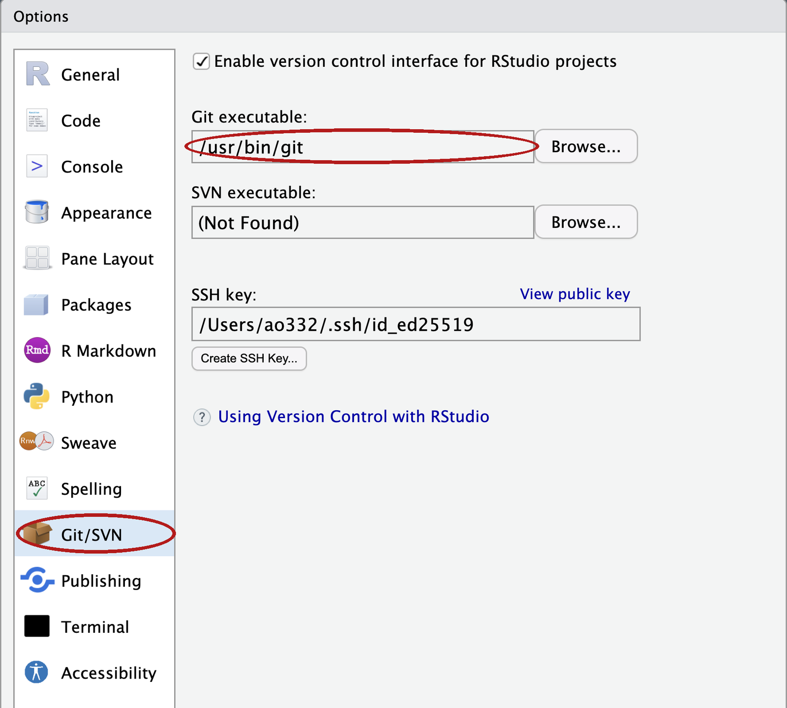
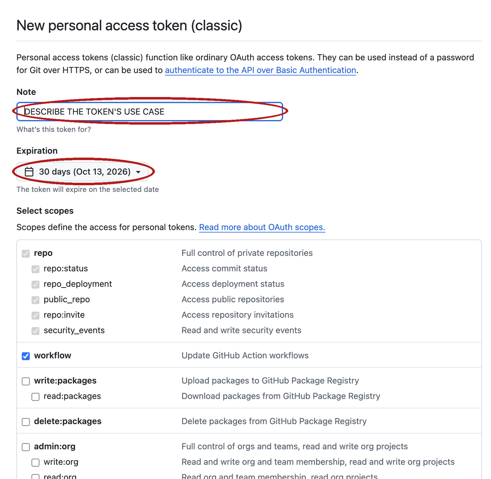
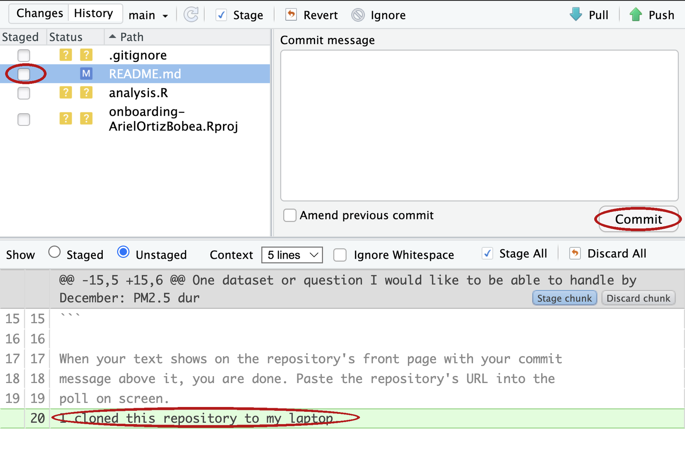
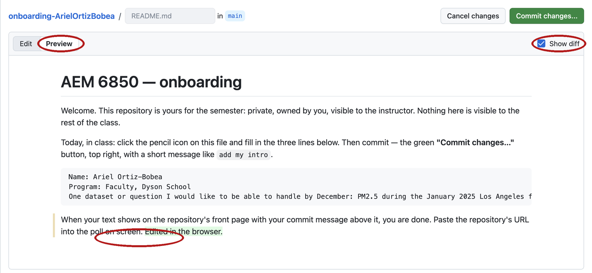
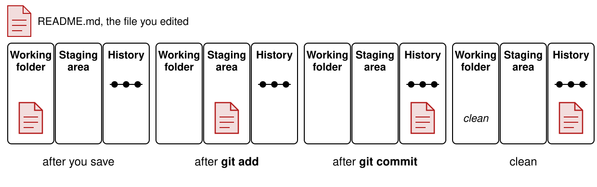
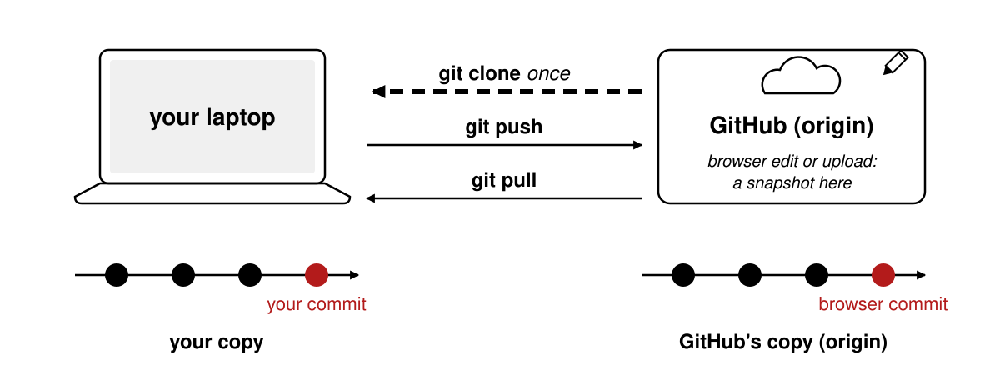
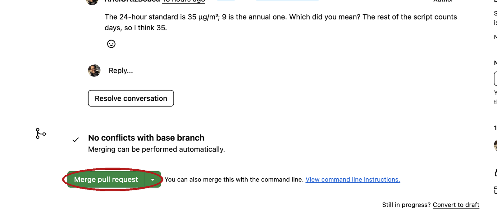

7 · Version control with git
Tuesday, September 15, 2026
What a repository is, how to copy one onto your laptop, and how a change moves from a saved file to a snapshot on GitHub. Every command is typed in RStudio’s Terminal tab, read as text, and undone at the place where it went wrong.
Thirty to forty-five minutes, once, on the laptop you will bring; most of it is waiting for a download, so start it this weekend; the download is the slow part. In class you type git commands; this makes them work. Do all six steps; step 6 is the test.
1. Install git.
Mac. Open RStudio, then Tools → Terminal → New Terminal. A tab named Terminal opens beside the Console. Type git --version and press Enter. If a window offers to install the command line developer tools, click Install and wait (ten to forty minutes; it is a large download). Then quit and reopen RStudio (it decided at startup that git was missing, and only a restart brings the Git pane and the Git option in the New Project dialog back), open a new Terminal tab, and type git --version again. You should see git version 2. and a number. If the installer fails (not currently available from the Software Update server), download Command Line Tools from developer.apple.com/download/all (search “Command Line Tools”, sign in with any Apple ID), or bring the laptop and use the browser path for the first exercise.
Windows. Download the 64-bit Git for Windows Setup at git-scm.com/download/win and run it. Click Next on every screen except one: on the screen titled Choosing the default editor used by Git, pick Use Notepad as Git’s default editor. Everything else stays at its default, and the defaults include the two things we use: Git Bash, and the credential manager that will remember your GitHub login. Quit and reopen RStudio. Tools → Global Options → Terminal → New terminals open with: choose Git Bash → OK. Then Tools → Terminal → New Terminal and type git --version. You should see git version 2. and a number. The prompt should contain MINGW64; if it does not, redo the Global Options → Terminal step, because the next steps only work in Git Bash.
2. Tell RStudio where git is. Tools → Global Options → Git/SVN. The Git executable box should show a path: /usr/bin/git on a Mac, C:/Program Files/Git/bin/git.exe on Windows. If it is empty, click Browse and find it there, click OK, and restart RStudio once more.

3. Tell git who you are. In the Terminal tab, with your name and the email on your GitHub account. Enter after each line:
git config --global user.name "Your Name"
git config --global user.email "you@cornell.edu"
git config --global pull.rebase falseNo output means it worked. Every snapshot you take will carry this name. The third line picks the simpler of two behaviours for a situation in the practice set, and the first time you upload in the browser and push from your laptop.
Then make the folder where every repository this semester will live. That folder must not be inside Dropbox, OneDrive, Google Drive or iCloud Drive; on a Mac, Desktop and Documents often are.
Mac. In the same Terminal tab: mkdir ~/github (File exists is also fine). ~ is your home folder, and it is not synced.
Windows. Not in the Terminal: inside RStudio, ~ is Documents, which OneDrive often syncs, so mkdir ~/github would put the folder in the wrong place. In RStudio’s Console instead, Enter after each line:
Sys.getenv("USERPROFILE")
dir.create(file.path(Sys.getenv("USERPROFILE"), "github"))The first prints [1] "C:\\Users\\<name>" (R doubles the backslashes on screen; the folder is C:\Users\<name>). Write down that <name>: it is your Windows username and you type it in step 5. The second prints nothing; no output means it worked. If it prints a warning ending in already exists, that is also fine. Check in File Explorer: This PC → C: → Users → your name → github exists.
4. Get a token so your laptop can talk to GitHub. GitHub does not accept your password from a program; it accepts a token (a personal access token): a long random string that a program shows GitHub in place of your password, and that you can revoke without changing the password. In RStudio’s Console (not the Terminal):
install.packages(c("usethis", "gitcreds"))
usethis::create_github_token()If R asks whether to use a personal library, answer Yes; if it asks about installing from sources, answer No.
Your browser opens GitHub’s New personal access token (classic) page with the right boxes already ticked. Type anything in Note (AEM 6850 laptop), set Expiration to Custom and pick a date after December 31, 2026. Scroll down, click Generate token, and copy the long string that starts with ghp_ (the copy icon next to it). You will not see it again.

usethis::create_github_token() opens it. Fill in the Note, change the Expiration, and click Generate token at the bottom; the ticked scopes stay as they are.Back in the Console:
gitcreds::gitcreds_set()Paste the token at the ? Enter password or token: prompt and press Enter. It prints -> Adding new credentials..., -> Removing credentials from cache... and -> Done. The token is now in your computer’s keychain; git will use it without asking. Do not paste it anywhere else.
If step 4 fails on Windows, skip it. The first time git talks to GitHub, a sign-in window opens; sign in there once and it remembers.
5. Make a repository, commit once in the browser, clone it. A private repository under your own account; a successful clone then proves the token can read a private repository.
Make it. On github.com, click + at the top right → New repository. Repository name: git-practice. Select Private. Tick Add a README file. Click Create repository. The page that opens is the repository: one file, README.md.
Commit once in the browser. Click README.md, then the pencil icon at the top right of the file. Add one line at the end, with your name and your program:
Your Name, PhD student in Applied Economics.Click the green Commit changes… button. In the dialog, replace the text in the message box with add my intro, leave Commit directly to the main branch selected, and click Commit changes. The front page now reads 2 Commits. This is the last snapshot you take in the browser; on Tuesday you take them from your laptop.
Clone it. On the front page click the green Code button and, on the HTTPS tab, click the copy icon beside the address. It reads
https://github.com/<your-username>/git-practice.gitFile → New Project → Version Control → Git. Repository URL: paste the address.

github folder in the bottom one (set with Browse), then Create Project.Create project as subdirectory of: this box cannot be typed in. Click Browse… and pick the github folder you made in step 3. On a Mac it is inside your home folder (the house icon, or Go → Home in the dialog). On Windows the dialog opens in Documents, which is often OneDrive; do not stop there. Go to This PC → C: → Users → your name → github, select it, and click Open. The box then shows the full path, ending in github. Create Project. A window shows Cloning into 'git-practice'.... On a Mac, if a dialog asks whether git-credential-osxkeychain may use your confidential information, click Always Allow: that is git reading the token from step 4, not an error. RStudio restarts inside the new project, the Files pane lists README.md and git-practice.Rproj, and a Git tab appears top-right listing those two plus .gitignore (the Files pane usually hides it, because its name starts with a dot; the Git tab never does). RStudio made the two new files and we deal with them in class.
Already cloned your onboarding repository from the course organization instead? Keep it. It has the same two commits, Initial commit and add my intro, and everything on Tuesday works there the same way.
6. Test the rest. In the new project, Tools → Terminal → New Terminal. The prompt shows git-practice just before the % (Mac) or on the line above the $ (Windows). Type these two lines, Enter after each:
git config user.name
git pushThe first prints your name. The second prints Everything up-to-date: git signed in to GitHub with permission to write, and changed nothing. That is a pass. If the second asks for a username and password, repeat step 4. If the first prints nothing, repeat step 3. Do nothing else in this project before Tuesday.
Repository not found: repeat step 4 (gitcreds::gitcreds_set() again, and choose the option to replace the stored token), and check that the address is the one the Code button gave you. git not found or no Git tab: repeat step 2. Anything else: bring the laptop to class; the first exercise has a browser-only path.
Diagnostic: in the Terminal, git ls-remote https://github.com/<your-username>/git-practice.git prints two lines of hashes when the token reaches the private repository, Repository not found when a stored token cannot, and asks for a username when no token is stored at all (press Ctrl+C and repeat step 4).
Privacy: every commit carries the email from step 3; if you would rather not publish it, GitHub gives you a noreply address at github.com/settings/emails (tick Keep my email addresses private). Set that in step 3 instead. Course repositories are private, so this is optional.
Objectives
By the end of this session you can:
- Explain what a repository is: a folder whose history git records, with one copy on your laptop and one on GitHub.
- Create a repository on GitHub and copy it to your laptop as an RStudio project.
- Save a change into the history: edit a file,
git addit,git commitit with a message, andgit pushit to GitHub. - Bring a change made on GitHub down to your laptop with
git pull. - Read
git statusand tell whether a change is only on disk, staged for the next commit, or already committed. - Read a diff and say what changed, including a change a coding assistant made.
- Undo: throw away an edit, unstage a file, fix the message of your last commit.
- Explain what a branch and a pull request are.
Plan for today
- Why version control
- A repository is a folder plus a timeline
- Two copies: your laptop and GitHub
- One change, from your editor to GitHub
- Choosing what a snapshot contains
- Undoing at each place
- Pull, and the push that is refused
- Branches, pull requests, and what stays out of a repository
A folder without version control
analysis_v1.R
analysis_v2.R
analysis_FINAL.R
analysis_FINAL_v2.R
analysis_REALLY_FINAL.R
analysis_FINAL_USE_THIS.R- Which one made Table 2?
- What changed between
FINALandFINAL_v2? - Which one still runs?
Everyone has this folder. The clutter is not the cost. The cost is that somewhere in there you changed something that worked, and you cannot remember what. The file names say that you were worried; they do not say what you did.
The tool today is version control: a program that records every state a folder has been in, each with a note, so that you can compare any two states later. It answers all three questions above, for every file, forever, and it does so without a single _v2 in a file name.
Three questions version control answers
- What did I change since the version that worked? You, four months later, when a coefficient moved.
- What exactly did this edit change? A coauthor, or a tool that writes forty lines in ten seconds, hands you a file. The change is what you review, not the file.
- Who changed this line, when, and why? Two people, one script, no emailing of
paper_v3_jane_edits.R.
Version control works by taking a snapshot: the whole folder as it was at one moment, saved together with a note on what changed and why. Three situations show what the snapshots buy you.
The coefficient that moved. You present a table in a seminar in April. In August you rerun the script for the paper and one coefficient is different. You did not mean to change that script. Without snapshots you reread every line and hope. With snapshots you ask for the difference between the April version and today’s, and read a screen of changed lines instead of a file.
The edit that is mostly right. A coauthor sends back your script with “a few small fixes”. A coding tool rewrites a block in ten seconds. In both cases you receive a file, and a file is the wrong thing to review. What you want to review is the change: which lines are different now, and only those. A snapshot taken before the edit is what makes that question answerable afterwards.
The referee, three months later. The referee asks why 2019 is dropped from the sample. You and your coauthor both edited the cleaning script that spring. Every snapshot carries a name, a date and a message, so the question “who dropped 2019, when, and why” has a written answer, and nobody has to reconstruct it from email.
A fourth benefit needs one line. A copy of the folder and all its snapshots kept on GitHub is a backup, so a stolen laptop costs an afternoon, not a project.
What a coding assistant’s edit looks like
A coding assistant (Copilot, ChatGPT, Claude) was asked to add one check to a three-line script. This is what it did.
# analysis.R -- days above the PM2.5 standard
-STANDARD <- 35
+STANDARD <- 9
pm <- read.csv("data/epa_pm25_la_fires_2024_2025.csv")
+stopifnot(nrow(pm) > 0)- You asked for the last line.
- Nobody asked for the
-/+pair in the middle: 35 became 9. - What did the assistant change? That is the question for the rest of the day.
The block above is a diff: two versions of a file compared line by line, each removed line marked -, each added line marked +, unmarked lines unchanged and shown so you know where you are. Nothing here was run; it is what a coding assistant did to a three-line script when asked to add a check that the data file is not empty. The check is the last line, and it is what you asked for. The pair in the middle is not: the model replaced the daily PM2.5 standard, 35, with 9. Nine is a real EPA number, the annual one, so the line looks plausible, and it is wrong for a script that counts days. The model’s own summary of its work would probably not mention it, because from the model’s side it was a correction rather than a change.
That is the case for version control in the year you are learning to code. A model writes forty lines in ten seconds. Most are right. A few are subtly wrong, and the wrong ones look exactly like the right ones. Reading forty new lines cold is slow, so you skim. Reading five changed lines is fast, so you do not.
The transcript says what the model meant to do. The diff says what it did. Only the diff treats the two edits above the same way, as lines that are different now, and only the diff is short enough to read in full every time. It is the one thing you can actually check.
The diff is only this clean because the starting point was clean. If a tool edits a folder that already holds your own half-finished changes, the diff mixes the two and you cannot tell whose line is whose. Take a snapshot of your own work first. Then everything the diff shows is the model’s, and nothing else.
Version control also has an undo for exactly this situation, git restore (shown under git restore: discard the edit), which puts a file back the way it was at the last snapshot. That one command is what makes trying cheap: ask for the change, read the diff, keep it or throw it away. You are never more than one command from the version that worked, so there is no reason to be shy about asking.
Finally, the timeline is the record. A snapshot whose note says add empty-file check is yours; one whose note says model: rewrite the cleaning step is not, if you write it that way. Say in the message when a model wrote the change; it costs six characters. Six months from now that difference matters, to you and to anyone who reads the paper. Written into the timeline, the split between what a model wrote and what you wrote is a fact. In your memory, it is a guess.
git and GitHub are two different things
| git | GitHub | |
|---|---|---|
| What | a program on your laptop | a website |
| Does | takes and keeps snapshots of a folder | keeps a copy of the snapshots and shows them in a browser |
| Needs the internet | no | yes |
| You have used it | not yet | once: add my intro, before class |
git is a program that runs on your laptop; it takes snapshots of a folder and keeps them, and it works with no internet connection at all. GitHub is a website that stores a copy of those snapshots and shows them in a browser, so that a coauthor, a grader, or you on another machine can see them.
The two are separate. You can use git for a year and never put a folder’s snapshots on GitHub. You can, as you have so far, use GitHub without git on your laptop: every snapshot you have made so far was taken by GitHub when you clicked a button in the browser. Today you take them yourself, and you see what the button was doing.
A repository is a folder plus a timeline

A repository is a folder plus a timeline of the snapshots taken of it. The left half of the picture is the folder you already know: the git-practice repository you made before class holds one file, README.md. The right half is the new part: a line of snapshots, oldest on the left, each with a message. There are two, and you made the second one in the browser.
The timeline lives inside the folder, in a hidden subfolder called .git. Never open it. If you delete it, the files survive but the timeline is gone; if you copy the folder with .git inside, the timeline comes along.
One thing to get right from the start: a snapshot records the whole folder as it was at one moment, not the difference from the previous one. Git computes the difference between any two snapshots when you ask for it. That is why you can ask “what changed between Tuesday and today” without having planned for the question on Tuesday.
Make a repository
A repository is born on GitHub in one form. On github.com, click + at the top right → New repository, name it, select Private, tick Add a README file, and click Create repository. The page that opens is the front page of a repository with one file and one snapshot: GitHub created README.md and took the first snapshot itself, with the message Initial commit. A repository is born with a timeline of length one.
The second snapshot is the one you took before class: the pencil on README.md, one line, Commit changes with the message add my intro. That click is git. GitHub took a snapshot of the whole folder and wrote your caption on it.
Every tutorial and every assistant will also offer git init, which turns a folder on your laptop into a repository where it stands. It makes a timeline with no GitHub copy, and connecting one afterwards takes two more commands and an address typed by hand. Make the repository on GitHub first and clone it: the connection comes free, and the backup exists from the first minute. Putting a folder you already have under version control is the same route, shown under Start a repository.
Your repository on GitHub

main, the commit count, and the green Code button.Open your git-practice repository in the browser: github.com/<your-username>/git-practice. It looks like the picture. Five things on this page matter today.
- The name. The owner, then a slash, then the repository: your username, then
git-practice. Together they are the repository’s full name, and they are the first part of its address. - The file list.
README.mdis the only file. Until today, this list is all you have looked at, and you treated the page as a folder on a website. main. The dropdown at the top left of the file list names the timeline you are looking at. Every repository starts with one timeline, and it is calledmain.2 Commits. The clock icon and the count at the top right of the file list. Two snapshots. This link is what makes the page a repository and not a folder; it opens the timeline.- Code. The green button. It is where a copy of the repository comes from: you clicked it for the ZIP, and today you use it for the address.
The history: the Commits page

<> icon.Click 2 Commits. The page that opens is the history: the timeline as a list, newest on top. Each row is one commit, which is git’s word for a snapshot together with who took it, when, and why. The bottom row, Initial commit, was made by GitHub when the repository was created. The top row, add my intro, is yours: you edited the README in the browser and clicked Commit changes. That click took a snapshot and wrote your message on it.
Each row has four parts.
- Message.
add my introis the commit message: the one line a human writes to say what the snapshot changed and why. It is the only part of the row a person typed. - Author and when. Your username and the date. Git fills these in from the name and email you set before class.
- Hash. The seven characters at the right are the start of the commit’s hash, a forty-character ID that git computes from the snapshot’s contents. Git names commits by this ID, not by a number, so the first seven characters are how you point at one.
<>. The angle-bracket icon opens the whole folder as it was at that commit, so you can browse any file at any point in the timeline.
One commit, opened: the diff

add my intro commit, opened. Circled: the 1 file changed count with its +2 −1 badge, the grey @@ row, and the red/green pair for the title line.Click the message add my intro. The page that opens is the commit itself, shown as a diff against the commit before it. This is the most important picture of the day. A commit is a photo of the whole folder, not a note about what moved; GitHub shows the difference from the photo before, because the difference is what a person can read. Two photos side by side, spot the difference: that is a diff, and git works one out for any two snapshots you name.
1 file changed,+2 −1. One file differs between the two snapshots; in it two lines were added and one removed. The title line,# git-practice, shows once red and once green although nobody edited it: GitHub’s README had no line ending, adding a line below gave it one, and git shows the old line and the new. The second green line is the one you typed. Your badge says the same, or+1if your editor kept the ending. Both are one edit, read as lines.- Red
-and green+. A red line with-is the line as it was. A green line with+is the line as it is now. When a line was edited rather than added, the two sit together as a pair. @@ -1 +1,2 @@. The grey row says where in the file you are: old line 1, new lines 1 to 2. You will rarely need the numbers.- Unmarked lines. Everything with no
-or+is context: lines that did not change, shown so you can see where the change sits.
How to read a diff
--- a/analysis.R
+++ b/analysis.R
@@ -1,3 +1,4 @@--- a/is the old version,+++ b/the new.@@ ... @@says where in the file. You rarely need the numbers.- A changed line shows as one
-and one+. Read them as a pair. A pure addition is+alone. - Read every
-first. A removal you did not ask for is the dangerous one. - Ask of every diff: is this the change I meant, and only that?
When git prints a diff in the Terminal, three header lines sit above the body that GitHub shows. The first two name the file twice: --- a/ is the old version and +++ b/ is the new one. The third is the @@ row from the commit page above. After the header come the lines, marked or not.
Read the five rules in order, and apply the fourth one every time. In the model’s edit above, the only - line is STANDARD <- 35, and it is the line that should have stopped you. Additions are usually what you asked for. Removals are where the surprises hide. The last rule is the question a diff exists to answer: is this the change I meant, and only that? If the answer is no, the snapshot waits until it is yes.
Local and remote: two copies of one timeline

A repository usually exists twice. The copy on your laptop is the local one; the copy on GitHub is the remote one. They hold the same timeline, and three verbs move it between them.
- Clone makes the local copy from the remote one: it downloads the whole repository, timeline included, and remembers where it came from. You do it once per repository.
- Push sends the snapshots you have taken on your laptop up to GitHub.
- Pull brings the snapshots that exist on GitHub down to your laptop.
Git calls the copy a repository was cloned from origin; the word appears in git status from the first command. There is no “sync”. You say which direction, every time, and nothing moves until you say so. The picture every student brings to this is Dropbox, and it is the wrong one: Dropbox copies every save, both ways, by itself, and one folder is in two places. Git keeps two albums, yours and the shared one, and a photo moves only when you hand it over or ask for it. A change on one copy never surprises you on the other. In particular, a pencil edit or a file upload in the browser is a snapshot taken on GitHub’s copy only. Nothing arrives on your laptop until you pull, and git status, which never asks GitHub, will not tell you it is there.
One more contrast. GitHub’s Download ZIP button gives you a print of the newest photo: the files as they are now, and no album. A clone is the whole album, every snapshot, and it remembers which shared album it came from.
The address of a repository

On the repository’s front page, click the green Code button. A panel opens on its Local tab; under Clone are three small tabs, and HTTPS is usually already selected. Click it if it is not. The box beneath shows the repository’s address:
https://github.com/ArielOrtizBobea/git-practice.gitClick the copy icon at the right of the box. That address is what every clone, push and pull uses to find the remote copy. Three things to know about it.
- It is the repository’s full name, owner and repository, with
https://github.com/in front and.giton the end. Yours has your username where mine hasArielOrtizBobea. - The
.gitis part of the address. It is not the hidden folder on your laptop, and you do not leave it off. - Use the HTTPS tab, not SSH and not GitHub CLI. HTTPS is the route the token from Before class was made for; the other two need setup you have not done.
Clone into an RStudio project
You did this before class, step 5. Read this section against the project you already have, and do not clone a second time: RStudio refuses a folder that already exists. To reopen the project, File → Recent Projects → git-practice.
In RStudio, File → New Project → Version Control → Git. Three boxes.
- Repository URL. Paste the address you copied.
- Project directory name. RStudio fills this in from the address:
git-practice. Leave it. - Create project as subdirectory of. The box cannot be typed in. Click Browse… and pick your
githubfolder: inside your home folder on a Mac,C:\Users\<you>\githubon Windows.
Click Create Project. RStudio runs one command and shows its output in a small window:
git clone https://github.com/<your-username>/git-practice.git
#> Cloning into 'git-practice'...
#> remote: Enumerating objects: 6, done. # GitHub's lines; counts vary
#> remote: Counting objects: 100% (6/6), done.
#> ...
#> Receiving objects: 100% (6/6), done.... stands for lines left out of a block: here, more of GitHub’s progress lines; later, lines you have already seen in an earlier block.
The dialog is a wrapper on that one line, git clone and the address, which every tutorial and every AI assistant will tell you to type. The clone lands in github/git-practice: the files, plus the hidden .git that holds the timeline. RStudio adds a project file, git-practice.Rproj, and restarts inside the new project.
Two things about where the folder lands. First, it can be anywhere on your disk and your scripts still run. The .Rproj file RStudio added marks the top folder of the project: RStudio opens the Terminal there, and R reads a path like data/file.csv from there, so a script never needs to know where on the disk the folder sits. Second, ~ is your home folder on a Mac. On Windows, RStudio’s ~ is Documents, which is why the box gets the full path C:/Users/<you>/github with forward slashes. The github folder is where every repository goes, and it must not be inside Dropbox, iCloud Drive, OneDrive or Google Drive: two sync tools fighting over .git corrupt it silently. GitHub is the cloud copy. On a Mac, Desktop and Documents are often iCloud folders; on Windows, Documents is often OneDrive; the github folder is neither.
The Terminal tab and the Git pane

After the restart, RStudio is open inside the new project. Three panes matter today.
The Terminal tab. Tools → Terminal → New Terminal opens a tab named Terminal next to the Console, already inside the project folder. Every git command is typed there: type after the prompt, press Enter, read what comes back. The prompt shows the project’s name just before the % on a Mac, or on the line above the $ on Windows. On Windows the prompt has two lines: the first ends in MINGW64 …/git-practice (main), the second is $. That is Git Bash, and it is correct.
The Git pane. A tab named Git sits top-right, beside Environment. It lists files whose state differs from the last snapshot, each with an icon. Right now it shows two rows with a yellow ?: .gitignore (a list of files git should leave alone; explained under .gitignore: what git should not track) and git-practice.Rproj, the two files RStudio made when it built the project (the picture is from an earlier repository; the names differ). The pane shows the same state a command reports, so you can read it as a mirror of what you typed. It refreshes on a timer, not after every command, so it can lag a few seconds; click its refresh icon when it does. Watch it for now; do not click in it.
The Files pane. It lists README.md and git-practice.Rproj. On most laptops it does not list .gitignore, because the Files pane hides any file whose name starts with a dot unless you tick More → Show Hidden Files; the Git pane never hides it.
git status: where things stand
git status
#> On branch main
#> Your branch is up to date with 'origin/main'.
#>
#> Untracked files:
#> (use "git add <file>..." to include in what will be committed)
#> .gitignore
#> git-practice.Rproj
#>
#> nothing added to commit but untracked files present (use "git add" to track)Lines without #> you type. Lines with #> are what git prints.
Type git status at the prompt and press Enter. It is the one command that can never hurt you: it reads, it never writes, and when you are lost it is the thing to type. Read its reply line by line.
- Line 1.
On branch main. A branch is git’s word for a timeline; every repository starts with one, and yours is calledmain. - Line 2.
Your branch is up to date with 'origin/main'. Your copy of the timeline versus GitHub’s.originis the name git gives the remote copy it was cloned from, soorigin/mainis GitHub’smain. Up to date means the two hold the same snapshots. Untracked files. A file is untracked when git can see it in the folder but no snapshot has ever included it. RStudio made both of these when it built the project.README.mdis not listed: it is tracked, meaning a snapshot includes it, and it has not changed since.- The parentheses. Each heading carries a hint that names the command that moves the files under it. Read them; they are the manual.
<file>is a placeholder: type the file’s name, no brackets, as ingit add README.md. - The last line.
nothing added to commitsays the next snapshot, if you took one now, would be empty. What to do about the two untracked files is the next section.
git log –oneline: read the timeline
git log --oneline
#> 6a952cb (HEAD -> main, origin/main, origin/HEAD) add my intro
#> 6a25190 Initial commitType git log --oneline. The reply is the timeline as text, one line per snapshot, newest first: the first seven characters of the hash, then the message. The two hashes are the ones on the Commits page in the browser. That is the proof that a clone is the timeline itself, not a download of the files.
The labels in parentheses on the top line say where things stand. HEAD is git’s name for the snapshot you are currently working from, and HEAD -> main says that is the newest one on main. origin/main is where GitHub’s copy of the timeline ends; for now it is the same commit. origin/HEAD is the branch GitHub opens by default. Ignore it.
Plain git log, without --oneline, prints the full forty-character hash, the author, the date and the whole message for each commit. Either form can print more than fits on the screen. When that happens the Terminal hands the output to a pager, a viewer that shows one screen at a time: the prompt disappears, the arrow keys move up and down, and q returns the prompt. If the screen ever fills and the prompt is gone, press q.
Exercise 1
# Exercise 1 (7 minutes). Your git-practice repository, on your laptop.
#
# 1. Save any open scripts first: switching projects restarts R
# and empties the Environment. Then open the project you cloned
# before class: File > Recent Projects > git-practice.
# Not cloned before class? Use the browser path under this box now;
# clone tonight with Before class step 5, and bring the laptop to
# office hours if it still fails.
#
# 2. Tools > Terminal > New Terminal, then: git log --oneline
# How many commits? Which one did you make in the browser?
#
# 3. git status
# Under which heading are the two files RStudio made?
#
# Two answers to compare with the room: the number of commits, and the
# heading the two RStudio files sit under.Cloned your onboarding repository from the course organization instead? Same exercise, same answers: it has the same two commits. No repository at all? Do the browser fallback below.
Cloning now instead of before class: File → New Project → Version Control → Git, paste the address from your repository’s Code button, https://github.com/<your-username>/git-practice.git, Browse… to your github folder. This is here for tonight, not for the seven minutes of the exercise.
git log --oneline
#> 6a952cb (HEAD -> main, origin/main, origin/HEAD) add my intro # your hashes differ
#> 6a25190 Initial commit
git status
#> On branch main
#> Your branch is up to date with 'origin/main'.
#>
#> Untracked files:
#> (use "git add <file>..." to include in what will be committed)
#> .gitignore
#> git-practice.Rproj
#>
#> nothing added to commit but untracked files present (use "git add" to track)Two commits; add my intro is yours. Both RStudio files sit under Untracked files: git sees the file, the timeline has never met it. What to do about that is the next section.
Fallback for laptops where git is not working. Read-only, so nothing is committed on GitHub that a later clone would have to pull first. No repository yet? Make it now: the first two parts of Before class step 5 (make it, commit once in the browser) need no git and take two minutes. Open github.com/<your-username>/git-practice and click the commit count (the clock icon at the top right of the file list). Answer 1 is there. Then click add my intro and read the red and green lines: the same click you made before class, opened. Note what is not there: no heading, no list of files waiting. The browser has no stop between the edit and the snapshot (the next section names that stop the staging area); the line went from the box straight to a snapshot. That missing stop is the next section. For answer 2, find a neighbour with a working clone and read their git status once.
Three places a change lives
![Four columns: Working folder, the desk; Staging area, what is in the frame; History, the album; and a dashed fourth column, GitHub, the shared album. Arrows along the top read git add, into the frame; git commit -m, press the shutter; git push, hand over the new photos. An arrow back from GitHub to History reads git pull. Brackets beneath mark git diff between the first two columns and git diff --staged between the next two. A bar along the bottom reads git status: reads these three, changes nothing, never asks GitHub.](figures/07-git/D3d-four-places.svg)
A change is in exactly one of three places, and every command in this section moves it from one to the next or reports where it is.
The working folder is the folder on your disk: the files exactly as you see them in RStudio’s Files pane and editor. Git’s own name for it is the working tree, and that is the word git status prints. When you save a file, the change is here and nowhere else.
The staging area is the list of changes that the next snapshot will include. git add puts a file on it as the file is at that moment: git copies the file into the staging area when you type add, and the next commit records that copy. Edit the file again after add and the staged copy is the old one until you add it again. Until you add a change, it is not going into the next commit. History is the timeline itself, the snapshots that already exist.
Two verbs move a change to the right. git add moves it from the working folder to the staging area. git commit -m moves everything on the staging list into a new snapshot on the timeline. Two commands compare neighbouring columns: git diff shows what is in the working folder and not yet on the staging list, and git diff --staged shows what is on the list and not yet committed. git status reads all three and changes nothing.
Once a commit is taken, the working folder matches the newest snapshot again. That is the dashed arrow from history back to the working folder on the picture, and that is the state git calls clean, defined two sections down.
The working folder is your desk as it is right now. The staging area is what you have put in the frame. git commit -m presses the shutter: one photo of the whole desk, with a caption on the back, and the album is the history. git diff is the desk against the frame; git diff --staged is the frame against the last photo, exactly what the shutter will see, so look before you press. You can frame half of what is on the desk now and photograph the rest later, and you can take something out of the frame without touching the desk. The fourth column is not on your laptop: git push hands your new photos to the shared album on GitHub, and git pull brings down the photos you do not have yet. git status looks at the three columns on your desk and never at the shared album.
The sections up to git push run the loop once, on one change to README.md, and Exercise 2 asks you to do the same. After the exercise the loop runs again on a new file, where the staging area earns its keep. In class you watch the first loop and type it in the exercise; at home you can type all of it in your own git-practice project. If you do, your counts differ: Exercise 2 will show more than 3 commits, and Practice 1 may have nothing left to stage. That is fine; the answers in the room assume you only watched. Read each git status before the next command; it tells you which column you are in.
Edit a file: git status
An edit to a file the timeline already has. In the Files pane click README.md; it opens in the editor. Go to the end of the file, add the line
I cloned this repository to my laptop.and save (Cmd+S on a Mac, Ctrl+S on Windows). Now type git status in the Terminal tab and press Enter.
git status
#> On branch main
#> Your branch is up to date with 'origin/main'.
#>
#> Changes not staged for commit:
#> (use "git add <file>..." to update what will be committed)
#> (use "git restore <file>..." to discard changes in working directory)
#> modified: README.md
#>
#> Untracked files:
#> (use "git add <file>..." to include in what will be committed)
#> .gitignore
#> git-practice.Rproj
#>
#> no changes added to commit (use "git add" and/or "git commit -a")A new heading, Changes not staged for commit. README.md is modified: a file the timeline knows, changed on disk since the newest snapshot. The change is in the working folder and only there: it is not staged, and it is not in history. The two files RStudio made are still under Untracked files, where they were before. Git lists everything you have not decided about, every time you ask, and never does anything about them on its own.
Read the hints in parentheses. Git prints the verb for each move right next to the file: git add to stage the edit, git restore to throw it away. The last line mentions git commit -a. Ignore -a today; it stages every modified file and commits in one step, which skips the step this section is about.
In the Git pane, README.md shows a blue M beside the two yellow ?. The pane and the command read the same state.
git diff: what changed in the working folder
git diff
#> diff --git a/README.md b/README.md
#> index 863ff77..57434f7 100644
#> --- a/README.md
#> +++ b/README.md
#> @@ -1,2 +1,3 @@
#> # git-practice
#> Ariel Ortiz-Bobea, Dyson School, Cornell.
#> +I cloned this repository to my laptop.Type git diff and press Enter. It compares the working folder with the staging area. Nothing is staged right now, so the staging area equals the newest snapshot, and what prints is the change since that snapshot.
Start reading at ---. The two lines above it name the file, the two versions being compared and a permission code; skip them. --- a/ is the old version and +++ b/ the new one. The @@ line says where in the file: old lines 1 to 2, new lines 1 to 3. The two lines that begin with a space are context, unchanged. The last line begins with +: one line added, at the end of the file. No line begins with -, so nothing was removed.
Say that sentence back: one line added, none removed, at the end of the file. That sentence is the whole review. If you cannot say it about a diff, do not commit the diff.
In the Terminal, git colours a - line red and a + line green; the block above cannot, so read the first character of each line. If the screen fills and the prompt disappears, that is the pager. Press q to get the prompt back.
- Type
git diffand press Enter. - Find the lines that begin with
-or+. Say in one sentence what changed. - If the prompt is gone and the last line shows
:, pressq.
- In the Git pane, click
README.md, then click Diff in the toolbar. - The Review Changes window opens with the file’s diff on the right: the added line in green, two lines of context above it, and no red line, because nothing was removed.
- At the top of the diff, Show: Unstaged is
git diff; switch it to Staged and the window showsgit diff --stagedinstead.
git add: put a change in the frame
git add README.md
git status
#> On branch main
#> Your branch is up to date with 'origin/main'.
#>
#> Changes to be committed:
#> (use "git restore --staged <file>..." to unstage)
#> modified: README.md
#>
#> Untracked files:
#> (use "git add <file>..." to include in what will be committed)
#> .gitignore
#> git-practice.RprojIn the Terminal tab, type git add README.md and press Enter. add prints nothing. Silence is success.
Type git status and press Enter. README.md has moved from Changes not staged for commit to a new heading, Changes to be committed. That heading is the staging area. A change listed there is staged: it is in the frame for the next snapshot, and nothing else has happened to it. The two files RStudio made are still untracked: you did not name them, so they stay where they were.
Nothing is permanent yet. The timeline has not moved, and the line under On branch main still says you are up to date with GitHub’s copy. The hint in parentheses names the command that takes a file back out of staging; it comes later on the page, under git restore –staged.
On Windows, add sometimes prints warning: in the working copy of '…', LF will be replaced by CRLF the next time Git touches it. That is about line endings and it is harmless. The add worked.
You name the files you add. Naming them is the habit that keeps data out of a repository: a file you never name never gets in.
- Type
git add README.mdand press Enter. Nothing prints. - Type
git statusand press Enter.README.mdsits underChanges to be committed.
- In the Git pane (top right), find the row for
README.md. It shows a blue M in the Status column. - Tick the box in the Staged column beside it.
- That tick is
git add. Rungit statusin the Terminal andREADME.mdsits underChanges to be committed.

git commit: take the snapshot
git commit -m "Note the clone in README"
#> [main 8dd074b] Note the clone in README
#> 1 file changed, 1 insertion(+)
git status
#> On branch main
#> Your branch is ahead of 'origin/main' by 1 commit.
#> (use "git push" to publish your local commits)
#>
#> Untracked files:
#> (use "git add <file>..." to include in what will be committed)
#> .gitignore
#> git-practice.Rproj
#>
#> nothing added to commit but untracked files present (use "git add" to track)Type git commit -m, a space, and a message in double quotes, then press Enter. -m stands for message: the caption on the back of the photo. Every commit has one, and it says why the change was made, not what file it touched: git already knows the file.
Git replies with a receipt. The first line names the timeline (main), the new commit’s hash (yours will differ), and your message. The second line counts what went in: one file, one added line, which is the diff you just read, counted. If the count ever surprises you, you skipped the diff.
Type git status again. README.md has left the list: the edit is in history, and the working copy of the file matches the newest snapshot. The two untracked files are still there, and git still does nothing about them. A new line appeared under On branch main: Your branch is ahead of 'origin/main' by 1 commit. Your timeline is one snapshot longer than GitHub’s copy. The hint beneath it names the command that fixes that; it comes two sections down. (A working folder with nothing modified and nothing staged is what git calls clean; with the two untracked files still present, git says so in the last line rather than printing working tree clean. They are not in the way.)
Two symptoms mean the identity step was skipped (the two git config --global lines in Before class, step 3). The first is the error *** Please tell me who you are., when git cannot guess an email address; nothing was committed. The second is a paragraph starting Your name and email address were configured automatically, when it could guess one; the commit went through under a made-up address. In either case run the two git config --global lines in the Terminal, and the next commits carry your name. Leave the existing commit alone.
- Type
git commit -m "Note the clone in README"and press Enter. Read the second line of the reply:1 file changed, 1 insertion(+). - Type
git statusand press Enter. The second line saysahead of 'origin/main' by 1 commit.
- With the Staged box ticked beside
README.md, click Commit in the Git pane toolbar. - The Review Changes window opens: the file list on the left, the diff on the right, and a Commit message box at the top right. Type the message in that box.
- Click Commit under the box. A small window prints the same receipt as the Terminal; close it.
README.mdhas left the Git pane. Open Commit again and the Review Changes window’s top line reads Your branch is ahead of ‘origin/main’ by 1 commit.
A screen that asks for a message
# Please enter the commit message for your changes. Lines starting
# with '#' will be ignored, and an empty message aborts the commit.- Mac (vim), back out and use
-minstead:Esc, then:q!, Enter. Git printsAborting commit due to empty commit message.; nothing is lost. Thengit commit -m "…". - Mac (vim), type the message here: press
i, type it on the first line,Esc, then:wq, Enter. - Windows (Notepad): type the message on the first line, save, close the window. Close it empty and git aborts the commit; nothing is lost.
Forget -m and git opens an editor to ask for the message. The screen above is the top of it. Nothing is broken; git is waiting for you to type. On a Mac the editor is vim, which does not respond to typing until you tell it to. Two ways out. To back out and use -m instead: press Esc, type :q!, press Enter; git prints Aborting commit due to empty commit message. and nothing is lost, and you run git commit -m "…" next. To type the message here: press i, type it on the first line, press Esc, type :wq, press Enter. On Windows the editor is Notepad, if Before class step 1 was followed: type the message on the first line, save, and close the window; the commit completes when the window closes. While Notepad is open the Terminal shows hint: Waiting for your editor to close the file...; that is git waiting, not an error.
If the screen looks different and the bottom two lines mention ^X, the editor is nano: type the message, press Ctrl+X, then Y, then Enter.
Next time, git commit -m "…" with the message on the command line avoids the editor entirely. The other time this screen appears is after a git pull that has to join a commit made on GitHub to one of yours. That version starts with Merge branch 'main' of … and is shown under After a browser commit and a laptop commit, where it is triggered.
git push: send your snapshots to GitHub
git push
#> Enumerating objects: 5, done. # progress lines vary
#> ...
#> To https://github.com/ArielOrtizBobea/git-practice.git
#> 6a952cb..8dd074b main -> main
git status
#> On branch main
#> Your branch is up to date with 'origin/main'.Type git push and press Enter. Git sends every snapshot GitHub’s copy does not have: here, one commit. The progress lines vary from push to push and can be ignored. The last two lines are the receipt: the address the snapshots went to, and 6a952cb..8dd074b main -> main, which reads GitHub’s main moved from this hash to that hash. The first hash is where GitHub’s copy was, the second is where it is now, and both are hashes you saw in git log.
On a Mac, if the dialog asking whether git-credential-osxkeychain may use your confidential information did not appear when you cloned before class, it may appear now. Click Always Allow: that is git reading the token you stored in Before class, not an error. On Windows, a browser sign-in window means the credential manager is asking once; sign in and the push continues.
Type git status. The line Your branch is ahead of ‘origin/main’ is gone, replaced by up to date. GitHub’s copy now shows exactly what git log shows on your laptop; the two untracked files are still listed, and still not in the way.
This is the Commit changes button, from the other side. In the browser, one click took a snapshot and stored it on GitHub. Here you did the same thing in three steps, add, commit, push, and you could read each one before taking the next. Push is how work leaves your laptop.
- Type
git pushand press Enter. Wait for the prompt to come back. - Read the last line:
<old hash>..<new hash> main -> main. - Type
git status. The ahead of line is gone.
- Click the green up arrow, Push, in the Git pane toolbar (it is also in the Review Changes window).
- A small window prints the same lines as the Terminal, ending in
main -> main. Close it. - Open Commit again: the Your branch is ahead of ‘origin/main’ line at the top of the Review Changes window is gone.
GitHub after the push

README.md in the file list.Reload the repository’s front page in the browser. Three things changed. The commit count at the top right of the file list reads 3 Commits. Beside README.md in the file list sits the message of the commit that last touched it, yours. And the README rendered beneath the file list ends with the line you added. Three commits and the new README line: what git log --oneline shows on your laptop, in the browser. Click the commit count and the Commits page lists the same three messages in the same order, with the same hashes.
Exercise 2
# Exercise 2 (9 minutes). In your git-practice project, Terminal tab,
# browser open on your repository.
#
# 1. Open README.md in RStudio. Add one line at the end:
# My first commit from the terminal.
# Save.
#
# 2. git status. Under which heading is README.md?
# (The two RStudio files stay untracked; Practice 1 commits them.)
#
# 3. git diff. How many added lines (a single + at the left edge,
# green)? (If the prompt disappears, press q.)
#
# 4. git add README.md
# git commit -m "First commit from my laptop"
# Read the second line of the reply.
#
# 5. git push
# Then reload your repository's page on GitHub. How many commits?
#
# Two answers to compare with the room: the second line of git commit's
# reply in step 4, and the commit count after step 5.git status
#> ...
#> Changes not staged for commit:
#> modified: README.md
#>
#> Untracked files:
#> .gitignore
#> git-practice.Rproj
git diff
#> diff --git a/README.md b/README.md
#> ...
#> +++ b/README.md
#> ...
#> +My first commit from the terminal.
git add README.md
git commit -m "First commit from my laptop"
#> [main <new>] First commit from my laptop # your hash differs
#> 1 file changed, 1 insertion(+)
git push
#> ...
#> <old>..<new> main -> main # your two hashesREADME.md is modified. One added line; the +++ b/README.md header does not count, and a \ No newline at end of file line, if one appears, is not an added line either. Step 4’s second line is 1 file changed, 1 insertion(+). 2 insertions(+), 1 deletion(-) means your last line had no line ending and git re-wrote it; still one real line, so look at the diff, not the count. After step 5 the front page says 3 Commits (4 for anyone who committed the RStudio files before class), and your message sits beside README.md. In git log --oneline, origin/main and HEAD are on the same line again.
Fallback for laptops where git is not working. Do the same loop on GitHub’s copy. Open your repository in the browser and click README.md, then the pencil icon at the top right of the file. Go to the end and add the same line, My first commit from the terminal. Click the Preview tab above the editor and read your line once: this is the last look before you commit, the browser’s stand-in for git diff.

Click Commit changes…. In the dialog, replace GitHub’s message with one you wrote, First commit from my laptop will do, leave Commit directly to the main branch selected, and click Commit changes.

Reload the front page: answer 2 is the commit count, the same as the room’s. Then click the commit count to open the Commits page, and click your message to open the commit. Answer 1 is one green line, the browser’s version of 1 file changed, 1 insertion(+). You have done the loop on GitHub’s copy; the only thing missing is the copy on your laptop, and tonight’s clone brings all of it down.
A new file: git diff –staged
git add analysis.R
git diff --staged
#> diff --git a/analysis.R b/analysis.R
#> new file mode 100644
#> index 0000000..a3eb8fb
#> --- /dev/null
#> +++ b/analysis.R
#> @@ -0,0 +1,3 @@
#> +# analysis.R -- days above the PM2.5 standard
#> +STANDARD <- 35
#> +pm <- read.csv("data/epa_pm25_la_fires_2024_2025.csv")A second kind of change: a new file the timeline has never seen. File → New File → R Script opens an empty editor tab. Paste these three lines:
# analysis.R -- days above the PM2.5 standard
STANDARD <- 35
pm <- read.csv("data/epa_pm25_la_fires_2024_2025.csv")Save with Cmd+S or Ctrl+S; the save dialog opens in the project folder, which is where the file belongs. Name it analysis.R. Type git status in the Terminal tab:
git status
#> On branch main
#> Your branch is up to date with 'origin/main'.
#>
#> Untracked files:
#> (use "git add <file>..." to include in what will be committed)
#> .gitignore
#> analysis.R
#> git-practice.Rproj
#>
#> nothing added to commit but untracked files present (use "git add" to track)analysis.R is untracked, like the two files RStudio made: the timeline has never seen it. Type git diff and nothing prints for it. Untracked files are not diffed: there is no old version of a file the timeline has never had, so there is nothing to compare it with. git status is where untracked files are listed.
Type git add analysis.R and press Enter. Nothing prints; the file is in the frame. Then git diff --staged. This compares the staging area with the newest snapshot, so what prints is the next commit, exactly. The old version is /dev/null: the file did not exist before, so every one of its three lines is a +. The @@ line says the same thing in numbers: zero old lines, three new ones.
Read git diff --staged before every commit. It is the last look before you press the shutter, and it shows exactly what you are about to make permanent. In the Git pane, analysis.R shows a green A with the Staged box ticked, and Diff with Show: Staged prints the same three green lines.
git commit: one change per commit
git commit -m "Add analysis.R with the standard"
#> [main 4977c8d] Add analysis.R with the standard
#> 1 file changed, 3 insertions(+)
git add .gitignore git-practice.Rproj
git diff --staged
#> ...
#> +.Rproj.user
#> +.Rhistory
#> +.RData
#> +.Ruserdata
#> ... # the .Rproj: fourteen lines of settingsType git commit -m "Add analysis.R with the standard" and press Enter. The receipt says one file changed, three insertions: the diff you just read, counted. git status now says ahead by 1 again, with the two RStudio files still untracked.
Those two files are one logical change, the project’s scaffolding, so they go in together and on their own. Type git add .gitignore git-practice.Rproj (type the first letters of the second name and press Tab; the Terminal completes it), then git diff --staged to read what is in the frame. .gitignore is four lines: the patterns RStudio wrote for files git should never track, explained under .gitignore: what git should not track. The .Rproj is fourteen lines of RStudio’s project settings. Nothing else is in the frame; the #> ... on the slide stands for those lines.
Two changes, two commits. The new script gets its own snapshot with its own message, and so does the scaffolding. If a message would need the word “and”, it is two commits.
The timeline so far, and the second push
git commit -m "Add the files RStudio made for the project"
#> [main 7c91799] Add the files RStudio made for the project
#> 2 files changed, 18 insertions(+)
git log --oneline
#> 7c91799 (HEAD -> main) Add the files RStudio made for the project
#> 4977c8d Add analysis.R with the standard
#> 8dd074b (origin/main, origin/HEAD) Note the clone in README
#> 6a952cb add my intro
#> 6a25190 Initial commit
git push
#> ...
#> 8dd074b..7c91799 main -> mainType git commit -m "Add the files RStudio made for the project", Enter. Two files, eighteen added lines: the four patterns and the fourteen settings. Then git log --oneline.
Five snapshots, newest first. HEAD -> main sits on the top line: that is where your timeline ends. origin/main sits two lines down, on Note the clone in README: that is where GitHub’s copy ends. The two commits between them are new, and GitHub has none of them yet. git push sends them, and the receipt reads from the old end of GitHub’s copy to the new one. After it, git status says up to date and, for the first time today, nothing to commit, working tree clean: nothing modified, nothing staged, nothing untracked.
Read the messages bottom to top and you have the story of the project in five lines. That only works if each sentence says something. The next section is about writing ones that do.
Say the picture back to yourself before moving on. Saving a file puts a change on the desk. git add puts it in the frame. git commit presses the shutter, and the desk matches the newest photo again. git push hands the new photos to the shared album. Same commands, three times now, and the same commands in December.
A commit message says why
| Says why | Says nothing |
|---|---|
Drop the two monitors outside the county |
fix |
Switch to the 24-hour standard, 35 ug/m3 |
changes |
Add the distance calculation |
update code |
Fix the date parse: month came first |
final |
- One logical change per commit. If the message needs “and”, it is two.
- Commit when the script runs and does what you meant. Also before you try something risky, and before you stop for the day.
The left column answers the question you will ask in December: why did this change happen? The right column answers nothing. Add files via upload is a message nobody chose; stuff, WIP and . are messages nobody thought about.
How often to commit has three answers. Every small change: the log is long and each diff is tiny. One per finished task: each commit is a sentence in a research diary, and the diff is the paragraph behind it. One per day: each diff is a page, and the message cannot say why for all of it. Aim between the first two, about one commit per line of a research diary. A good time to commit is when the script runs and does what you meant. Two more: right before you try something you might want to throw away, and before you stop for the day.
The same picture after each command

Save puts a change in the first column. git add moves it to the second. git commit moves it to the third, and the first column is clean again. Run git status between any two of these and it names the column.
The assistant edited your script: read the diff
The brief was “add a check that the file has rows”. To follow along at home, play the assistant yourself. If you only watched and have no analysis.R, make it first: File → New File → R Script, paste the three lines from A new file: git diff –staged, save as analysis.R, then git add analysis.R and git commit -m "Add analysis.R with the standard", so there is a snapshot for the diff to compare with. Open analysis.R in RStudio, change STANDARD <- 35 to STANDARD <- 9, add stopifnot(nrow(pm) > 0) as the last line, and save. Then, in the Terminal tab, ask git what changed.
git status
#> ...
#> modified: analysis.R
git diff
#> diff --git a/analysis.R b/analysis.R
#> index a3eb8fb..816aaff 100644
#> --- a/analysis.R
#> +++ b/analysis.R
#> @@ -1,3 +1,4 @@
#> # analysis.R -- days above the PM2.5 standard
#> -STANDARD <- 35
#> +STANDARD <- 9
#> pm <- read.csv("data/epa_pm25_la_fires_2024_2025.csv")
#> +stopifnot(nrow(pm) > 0)- Asked for: the
stopifnot. Got: that, and a different standard. - The
-line is the tell. Read removals first. - The transcript says what was meant. The diff says what happened.
Read it the way the diff rules say. git status lists one file under modified, so the change is in the working folder and nowhere else. git diff compares the working folder with the staging area; nothing is staged, so this is everything that differs from the newest snapshot. Start at ---. The @@ -1,3 +1,4 @@ line says the file went from three lines to four. Now find every - before you read anything else: there is one, STANDARD <- 35, and the + under it is its replacement, STANDARD <- 9. Nobody asked for that pair. The second +, at the end, is the line you asked for.
Say the diff in one sentence: one line replaced, one line added. The replaced line changes the answer to every question the script asks, and it looks like a tidy edit. If you had only read the transcript, or only skimmed the file, you would have kept it.
git restore: discard the edit
git restore analysis.R
git status
#> On branch main
#> Your branch is up to date with 'origin/main'.
#>
#> nothing to commit, working tree cleanrestoreputs the file back to what is staged; nothing is staged, so that is the newest snapshot. No output, then clean. Look at the editor: RStudio reloads the file, the edit is gone.- Destructive. Edits never committed are gone for good. Run
git difffirst, every time, so you know what you are deleting.
To discard an edit is to throw it away and put the file back to the newest snapshot; git restore <file> does it, and nothing brings the edit back. That is the only command of the day that deletes work. The safety rule is one habit: git diff before git restore, every time, so the thing you are about to delete is on the screen when you delete it.
Type git restore analysis.R and press Enter. Nothing prints; silence is success. Then git status: no modified line, and the last line says working tree clean. The working folder matches the newest snapshot again. In RStudio, click into the editor tab for analysis.R: the file reloads from disk, the 9 is 35 again, and the last line is gone. If the old text is still showing, RStudio has not noticed the change yet; click into the editor once, or close the tab and reopen the file from the Files pane. The Git pane’s row for analysis.R disappears, because there is nothing to report.
- Type
git diffand read what you are about to delete. - Type
git restore analysis.Rand press Enter. Nothing prints. - Type
git status. The last line saysworking tree clean.
- Click
analysis.Rin the Git pane, then More → Revert. - Confirm in the dialog. The row disappears and the editor reloads the file.
- This is
git restore: destructive, the same as the command.
Three undo verbs, one per place

| The change is in | To undo | Command |
|---|---|---|
| the working folder | put the desk back to the last photo; the edit is gone | git restore <file> |
| the staging area | take it out of the frame; it stays on the desk | git restore --staged <file> |
| the last commit, not pushed | rewrite the caption, before it reaches the shared album | git commit --amend -m "…" |
<file> is the file’s name, no brackets: git restore analysis.R.
A change sits in exactly one of the three places, so undoing it is a matter of asking which place it is in and running the one command for that place. git status tells you the place. The table tells you the command. There are three, and they are not interchangeable.
restoreis the one that destroys. Git only remembers what you committed.- The third is safe only before you push. After a push, leave the commit alone and make a new one.
- Everything else exists. If you are in a state not on this table, stop and ask.
The first row is the command you just watched. The other two are on this page only, after the pull section, starting from the state the restore left, and the practice set makes you run them.
A commit made on GitHub
Now make a change on GitHub’s copy, the way a coauthor or your other laptop would. On the repository’s front page click README.md. The file opens in a viewer; click the pencil icon at the top right of it to edit. Go to the end of the file and add the line
Edited in the browser.Click the green Commit changes… button at the top right. The dialog in the screenshot opens. The message box already holds Update README.md; keep it this once. Leave Commit directly to the main branch selected and click Commit changes. The page returns to the file, and the front page’s commit count reads 6 Commits.
The pencil and the upload button do the same thing: they take a snapshot on GitHub’s copy of the timeline. The message GitHub wrote, Update README.md, is a message nobody chose, the same as Add files via upload. When you edit in the browser, replace it with one that says why.
Your laptop does not know yet. Nothing on GitHub reaches your copy until you ask for it, and the next section asks.
git pull: bring GitHub’s snapshots down
git status
#> On branch main
#> Your branch is up to date with 'origin/main'.
#>
#> nothing to commit, working tree clean
git pull
#> remote: Enumerating objects: 5, done. # GitHub's lines; counts vary
#> remote: Counting objects: 100% (5/5), done.
#> remote: Compressing objects: 100% (2/2), done.
#> remote: Total 3 (delta 1), reused 0 (delta 0), pack-reused 0 (from 0)
#> Unpacking objects: 100% (3/3), 301 bytes | 150.00 KiB/s, done.
#> From https://github.com/ArielOrtizBobea/git-practice
#> 7c91799..a7c1838 main -> origin/main
#> Updating 7c91799..a7c1838
#> Fast-forward
#> README.md | 1 +
#> 1 file changed, 1 insertion(+)Back in the Terminal, type git status first. It says Your branch is up to date with 'origin/main'. That is wrong, and it is wrong for a reason worth remembering: git status never asks GitHub. It reports what it knew about GitHub’s copy at the last push or pull, and nothing has happened on your laptop since. The browser commit is invisible from here.
Type git pull and press Enter. Git asks GitHub what it has that you do not, downloads it (the remote: lines are GitHub counting what it sends; they vary), and applies it. The line 7c91799..a7c1838 main -> origin/main says git’s record of GitHub’s copy moved forward by one snapshot. Then Updating 7c91799..a7c1838 and Fast-forward: your own timeline moved forward to match. A fast-forward is a pull where GitHub’s album was yours plus more: every snapshot you had, GitHub had too, so git only has to add the new ones to the end of your line. Nothing is joined and nothing can conflict. The last two lines are the receipt: one file, one line added.
Open README.md in RStudio. The line Edited in the browser. is there, and the editor reloaded it without being asked. Type git log --oneline and the top line is Update README.md, a commit you did not write, with HEAD -> main and origin/main on it together again.
A commit made in the browser, on your other laptop, or by a coauthor comes down the same way. The habit that keeps the two copies from drifting apart is one sentence: pull when you sit down, push when you stand up.
- Type
git statusand press Enter. Note that it says up to date. - Type
git pulland press Enter. Read the last line:1 file changed, 1 insertion(+). - Type
git log --oneline. The top line is the browser commit.
- Click the blue down arrow, Pull, in the Git pane toolbar.
- A small window prints the same lines as the Terminal, ending in
1 file changed. Close it. - Click
README.mdin the Files pane; the new line is at the end.
When push is refused
git push
#> To https://github.com/ArielOrtizBobea/git-practice.git
#> ! [rejected] main -> main (fetch first)
#> error: failed to push some refs to 'https://github.com/ArielOrtizBobea/git-practice.git'
#> hint: Updates were rejected because the remote contains work that you do not
#> hint: have locally. This is usually caused by another repository pushing to
#> hint: the same ref. If you want to integrate the remote changes, use
#> hint: 'git pull' before pushing again.
#> hint: See the 'Note about fast-forwards' in 'git push --help' for details.(Printed, not run: this is what you see the first time it happens.) Older git words the four hint: lines differently (You may want to first integrate the remote changes (e.g., 'git pull ...') before pushing again.; Apple’s git 2.39 does). Same meaning, same fix.
This is what git push prints when GitHub’s copy has a snapshot yours does not, and you push without pulling first. A rejected push is one that git refuses because each copy has a snapshot the other lacks: an upload or a pencil edit in the browser, a coauthor’s push, or a commit from your other laptop put something on GitHub’s copy that your copy has never seen, and git will not overwrite it. Nothing is lost on either side. Your commit is still on your laptop, and the browser commit is still on GitHub.
Read the message; it names its own fix in the hint: lines: use git pull before pushing again. Type git pull, then git push. The pull joins GitHub’s snapshot to yours, and the push then goes through. Because both copies had a new snapshot, the pull is not a fast-forward this time, and git may open an editor asking for a message for the join. Keep the message it suggests: Esc, :wq, Enter on a Mac; on Windows, close the Notepad window. The next section shows that screen.
If git pull instead prints a line with CONFLICT in capitals, stop and ask. It means the two snapshots changed the same line of the same file and git cannot choose. It is rare in a solo project, and it is not a disaster; it is a question git is asking you.
After a browser commit and a laptop commit

The two copies share the first three snapshots. GitHub’s has a fourth, the browser commit; yours has a different fourth, your commit. Each album has a photo the other lacks, so a push is refused and a pull has to join the two lines. Git’s word for that join is defined and drawn at the end of the page, under A branch is a second timeline.
This is the screen git pull opens in this situation:
Merge branch 'main' of https://github.com/ArielOrtizBobea/git-practice
# Please enter a commit message to explain why this merge is necessary,
# especially if it merges an updated upstream into a topic branch.Keep the suggested message. On a Mac: Esc, then :wq, then Enter. On Windows, close the Notepad window. A pull has no -m, and the suggested message is fine. After the editor closes, git prints a receipt, and git log --oneline shows the join on top of both fourth commits:
git pull
#> ...
#> Merge made by the 'ort' strategy.
#> README.md | 1 +
#> 1 file changed, 1 insertion(+)
git log --oneline
#> 100835e (HEAD -> main) Merge branch 'main' of https://github.com/ArielOrtizBobea/git-practice
#> 183282f Add a TODO
#> f6f4e1d (origin/main, origin/HEAD) Update README.md
#> ...
git push
#> ...
#> f6f4e1d..100835e main -> mainThen git push goes through, and both copies are equal again. Between the refused push and the pull, git status describes the situation in one line, Your branch and 'origin/main' have diverged, with a count of the commits on each side.
Without pull.rebase false (Before class, step 3), the pull stops instead with fatal: Need to specify how to reconcile divergent branches. after a block of hint: lines. Run git config --global pull.rebase false once, then git pull again.
Redo the good part by hand
Starting point: after the pull, the folder is clean and up to date with GitHub. The assistant’s edit is gone, and one of its two lines was the one you asked for. Put that one back yourself. In RStudio, add stopifnot(nrow(pm) > 0) as the last line of analysis.R. Save. Then read the diff and stage it.
git diff
#> ...
#> pm <- read.csv("data/epa_pm25_la_fires_2024_2025.csv")
#> +stopifnot(nrow(pm) > 0)
git add analysis.R- Redo the wanted line by hand. One
+, no-. Staged. - The assistant’s edit is gone; the check you asked for is in the frame. That is the whole loop: read the diff, keep what you meant.
The diff now has one + and no -: the standard is untouched and the check is there. That is the sentence you could not say about the model’s version. git add analysis.R moves the change into the staging area, and git status would list it under Changes to be committed. Stop here for a moment, because the next two sections start from exactly this state: one staged edit in analysis.R, nothing else pending.
The loop you just ran is the one to keep: an assistant edits, you read the diff, you discard what you did not mean and redo what you did. It costs a minute. Reading forty lines for the one that moved costs longer and finds less.
git restore –staged: take a file back out of staging
Starting point: the state after the redo, one staged edit in analysis.R. You have staged it and now want to look at it again before committing.
git restore --staged analysis.R
git status
#> On branch main
#> Your branch is up to date with 'origin/main'.
#>
#> Changes not staged for commit:
#> (use "git add <file>..." to update what will be committed)
#> (use "git restore <file>..." to discard changes in working directory)
#> modified: analysis.R
#>
#> no changes added to commit (use "git add" and/or "git commit -a")- Nothing is lost. The file left the frame; the edit is still on the desk.
- Use it when
git diff --stagedshows something you want to look at again. In the Git pane: untick the Staged box. - Then
git add analysis.Ragain.
To unstage a file is to take it back out of the staging area while leaving the edit on disk; git restore --staged <file> does it, and nothing is lost. The word restore is the same as in the destructive command, and the flag --staged is the whole difference, so read the line back before you press Enter.
Type git restore --staged analysis.R. Nothing prints. Then git status: analysis.R has moved from Changes to be committed to Changes not staged for commit. Open the file in the editor: the stopifnot line is still there. This is taking something out of the frame to look at it again, without touching the desk. The two hint lines under the heading name both moves you can make from here: git add to put it back in the frame, git restore to throw the edit away. When you are satisfied, git add analysis.R again, and git status shows it staged as before. Staged, then doubted. Unstage, read, stage again. The frame is for changing your mind.
- Type
git restore --staged analysis.Rand press Enter. Nothing prints. - Type
git status.analysis.Ris underChanges not staged for commit.
- Untick the Staged box beside
analysis.R. The blue M stays; only the tick goes. - That untick is
git restore --staged; the edit is still on disk.
git commit –amend: fix the last commit’s message
Starting point: the edit is staged again after the previous section. Commit it with a typo in the message, on purpose, and then fix the message.
git add analysis.R
git commit -m "Check the file has rowz"
#> [main 63afda4] Check the file has rowz
#> 1 file changed, 1 insertion(+)
git commit --amend -m "Check the file has rows"
#> [main 546b504] Check the file has rows
#> Date: Mon Sep 14 15:09:11 2026 -0400
#> 1 file changed, 1 insertion(+)
git log --oneline
#> 546b504 (HEAD -> main) Check the file has rows
#> a7c1838 (origin/main, origin/HEAD) Update README.md
#> ...
git push
#> ...
#> a7c1838..546b504 main -> main- One commit, not two. The hash changed: an amended commit is a new commit.
rowzis gone from the timeline. - Only before you push. After a push the snapshot is on GitHub’s copy too, and your next push is refused.
- Then push, so GitHub is current.
To amend a commit is to replace the last commit with a corrected one; git commit --amend -m "…" does it for the message, and it is safe only while the commit exists on your laptop alone. Read the first reply: [main 63afda4], with the typo. Read the second: [main 546b504], a different hash, and the Date: line shows git kept the original time. git log --oneline has one new line on top of Update README.md, not two, and the message is the fixed one. The commit with rowz is not in the timeline any more. Then git push sends it up, and the last line reads from the browser commit’s hash to the amended one.
Why only before pushing: once a commit is on GitHub’s copy, an amended one is a different commit with the same parent, and git refuses the push because the two copies disagree about what the newest snapshot is. A pushed commit is a shared fact, and you fix shared facts with a new commit. After a push, leave the commit alone and make a new one that says what it fixes. History grows forward, and that is fine.
The other amend you will want: git commit --amend --no-edit adds whatever is staged to the last commit and keeps its message. That is the forgotten-file case: you committed, then noticed one file was not in the frame. Stage it, amend with --no-edit, and the last commit has both. Same rule, before pushing only. Amend will not help when the content of a commit is wrong; make a new commit that says what it fixes.
A branch is a second timeline

main. The upper line starts at B, gets two snapshots of its own, and comes back into main at F. Follow the arrows; the three captions are the three events.- A branch starts at a snapshot and grows its own snapshots.
mainkeeps working while you experiment. - Merge joins the branch back. Delete it instead and
mainnever knew. - Solo, rarely: an experiment you might throw away; a rewrite that could break a working script; anything a coauthor should read first. Not for a one-line fix.
You have one branch, main, and everything today happened on it. A second branch starts from one of main’s snapshots and then takes its own snapshots. While you work on it, main does not move, so the script that ran this morning still runs from main this evening, whatever you broke on the branch. To merge is to join a branch back into the one it came from, so that main gets every snapshot the branch took. If the experiment failed, you delete the branch instead, and main never had it.
The four commands, one line each. You will not type them today; they are here for the day a coauthor or a tool asks you to.
| Command | What it does |
|---|---|
git switch -c try-new-standard |
Make a branch and move to it |
git switch main |
Move back to main |
git merge try-new-standard |
From main, join the branch in |
git branch -d try-new-standard |
Delete the branch once it is merged |
A merge conflict is what happens when two snapshots changed the same line and git cannot pick one. Git stops, marks the line in the file, and asks you to choose before the merge can finish. A solo project with one clone does not produce them, and they are not covered further today; if git pull ever says CONFLICT, stop and ask.
A pull request is a merge with a review attached
A pull request is a request, made on GitHub, to merge one branch into another, with a page where a reader sees the diff and comments on lines before the merge happens. It is GitHub’s feature, not git’s, and it is the way most code written by more than one person gets reviewed. Think of a manuscript under review: the branch is the submission, a coauthor comments on lines the way a referee does, and Merge pull request is the editor’s accept; only then does it land on main. git pull is downloading the issue after it is out. Same word, opposite ends of the process.
- Push the branch. Open a pull request. A reader sees the diff and comments on lines.
- Merge pull request does the merge on GitHub’s copy;
git pullbrings it down. - Not the same as
git pull.git pulldownloads, a pull request proposes.

try-new-standard into main; the diff below it is the same red and green as a commit page, and the comment sits on one line of it.The first screenshot is what the reader sees. The branch’s commits are pushed to GitHub, so the diff is the branch versus main, everything the branch would add if merged. A comment attaches to a line, and the author replies or pushes another commit to the same branch, which updates the diff. Nothing on main has changed yet.

The second screenshot is the end of the review. Merge pull request runs the merge on GitHub’s copy of the timeline, and main there now has the branch’s snapshots. Your laptop does not, until you git pull. That last sentence is the whole difference between the two uses of the word: a pull request proposes a change and waits for a person; git pull downloads snapshots and waits for nobody.
.gitignore: what git should not track
An ignored file is one git refuses to track: it never appears in git status, git add will not take it, and it never reaches GitHub. The list of what to ignore lives in a file named .gitignore at the top of the repository, one pattern per line, and that file is itself committed, so every clone follows the same rules. It is the do-not-photograph list: a file on it never reaches the frame, the album, or GitHub. Here is one for an R project that downloads its data, eleven lines:
# Data is downloaded by your script; never upload it.
data/
data_clean/
# R session artifacts
.Rhistory
.RData
.Rproj.user/
.Ruserdata
# OS junk
.DS_Store
Thumbs.db- One pattern per line. A trailing
/is a folder and everything in it;*.csvwould be every CSV anywhere. - An ignored file never appears in
git status. That is how a data folder stays out of a repository: the script downloads the data, and the timeline holds the script. .gitignoreis itself committed. Every clone gets the same rules. RStudio wrote the four-line one committed in class; yours is still untracked until Practice 1.- Never keep a repository inside Dropbox, iCloud Drive, OneDrive or Google Drive. Two sync tools fighting over
.gitcorrupt it silently, and GitHub is already the cloud copy.~/githubon a Mac andC:/Users/<you>/githubon Windows are outside all of them.
Data lives inside the project, in data/, and .gitignore keeps it out of the timeline. The script that downloads it is what gets committed, so anyone can clone the repository and rebuild everything from the script that fetches the data.
Three syntax rules cover every line you will write:
*stands for any run of characters in a name:*.csvis every file ending in.csv, in any folder.- A trailing
/names a folder and everything inside it:data/ignores the folder and all its contents. #starts a comment. Blank lines are ignored.
Here is what git says when you try to add something the rules exclude. Printed, not run:
git add data/test.csv
#> The following paths are ignored by one of your .gitignore files:
#> data
#> hint: Use -f if you really want to add them.
#> hint: Disable this message with "git config set advice.addIgnoredFile false"Do not use -f. Ignore the second hint too. Older git words the second hint differently (Turn this message off by running / "git config advice.addIgnoredFile false"; Apple’s git 2.39 does). Both say the same thing: do not. The message means .gitignore is doing its job.
A .gitignore for an R project, to paste into a new repository’s file when RStudio’s four lines are not enough:
*.csv
*.dta
*.rds
*.xlsx
data/
.Rhistory
.RData
.Rproj.user/
output/
.DS_Store
Thumbs.dbOne caveat. .gitignore only stops files that have never been committed. A file that is already in the timeline keeps being tracked after you add a pattern that matches it, until you tell git otherwise; if that happens, stop and ask rather than guessing at the command.
Start a repository: a new project, or an existing folder
A brand-new project is steps 1 and 2 below, then work in the folder; that is Before class step 5 with a new name, and Practice 9 does it once more. A folder you already have, with scripts and data in it, is all seven steps. Write the do-not-photograph list before you take the first photo.
- On GitHub, + → New repository. Name it, select Private, tick Add a README file, Create repository.
- Clone it into your
githubfolder as an RStudio project: Code → HTTPS → copy, then File → New Project → Version Control → Git. - Copy, do not move, your project’s files into the new folder. If the old folder had an
.Rproj, leave it behind; RStudio made a new one. - Before the first
git add, open.gitignore(the Git pane lists it; the Files pane hides it) and add the R-project block from the section above under the four lines RStudio wrote, sodata/,*.csv,*.dta,*.rdsandoutput/never reach the timeline. git status. Read the list. If a data file is on it, fix.gitignorefirst and read it again.git add ., thengit statusonce more,git commit -m "Import the project",git push. Reload GitHub and check that no data file is there.- Only now delete the old folder.
Every tutorial and assistant will also offer git init, which turns the old folder into a repository where it stands. It makes a timeline with no GitHub copy; connecting one afterwards takes two more commands and an address typed by hand. The route above reuses the twelve commands of the day, and the backup exists from the first minute.
Practice
# Practice
# Everything below runs in your git-practice project, Terminal tab,
# unless it says "sandbox" -- never in a homework repository.
# The loop
# 1. git status still lists .gitignore and your .Rproj as untracked.
# Stage both, commit them with a message that says what they are,
# push. Confirm on GitHub that both files and the message are there.
# 2. Add a file notes.md with three lines about what you want git to
# remember for you. Commit it with a message that says why. Push.
# 3. Edit README.md AND notes.md. Stage only notes.md. Run git status
# and read where each file sits. Commit. Then stage and commit the
# README change as its own commit. Read git log --oneline bottom to
# top: does it read like a diary?
# Undoing
# 4. Add a line to notes.md you do not mean to keep. Confirm it with
# git diff, then throw it away with git restore. Prove it with
# git status.
# 5. Add a line, stage it, then change your mind about staging (not
# about the edit). Which command? What does git status say after?
# 6. Commit with a typo in the message. Fix the message before you
# push. Check that git log --oneline shows the fixed message and the
# same number of commits.
# Pull, and the push that is refused
# 7. On GitHub, edit notes.md with the pencil and commit. On the laptop,
# run git status BEFORE pulling. Does it know? Then git pull. Which
# line of git log --oneline is the browser commit?
# 8. On GitHub, edit notes.md again and commit. On the laptop, edit
# README.md, commit, and push WITHOUT pulling first. Read the
# message. Fix it with the command the message names, then push.
# A new project
# 9. On GitHub, make a private repository under your own account named
# sandbox, with a README. Clone it into your github folder as an
# RStudio project. Add a .gitignore line data/ (RStudio made the
# file). In the Files pane: New Folder data, then File > New File >
# Text File, type one line, save as data/junk.csv. git status
# should not list it. Try git add data/junk.csv and read what git
# says. Do not do what it hints. Commit .gitignore and push.
# An assistant's diff
# 10. You asked an assistant to "add a check that the date column parsed".
# It returned this diff. Which line did nobody ask for, and what
# does it do to the sample?
#
# pm$date <- as.Date(pm$Date, format = "%m/%d/%Y")
# -pm <- pm[!is.na(pm$pm25), ]
# +stopifnot(!any(is.na(pm$date)))# 1
git add .gitignore git-practice.Rproj
git commit -m "Add the files RStudio made for the project"
git push
# expected: both files and your message on GitHub
# 2
git add notes.md
git commit -m "Add notes on what I want git to remember"
git push
# expected: notes.md on GitHub with your message
# 3 after the first add: notes.md under "Changes to be committed",
# README.md under "Changes not staged for commit"
git add notes.md
git commit -m "Extend the notes"
git add README.md
git commit -m "Update the README"
# expected: the two headings, then two commits in the log
# 4
git diff
git restore notes.md
git status
#> nothing to commit, working tree clean
# expected: working tree clean
# 5
git restore --staged notes.md
git status
#> Changes not staged for commit:
#> modified: notes.md
# expected: Changes not staged
# 6
git add notes.md
git commit -m "Add a line abuot the data"
git commit --amend -m "Add a line about the data"
git log --oneline # same count; top message fixed, new hash
# 7 git status says "up to date": it never asks GitHub. After git pull
# the newest line of the log is the browser commit; its message is
# the one from the Commit changes dialog (Update notes.md by default)
# expected: up to date, then the browser line on top
# 8 the push is refused:
git push
#> To https://github.com/<user>/git-practice.git
#> ! [rejected] main -> main (fetch first)
#> error: failed to push some refs to 'https://github.com/<user>/git-practice.git'
#> hint: Updates were rejected because the remote contains work that you do not
#> hint: have locally. This is usually caused by another repository pushing to
#> hint: the same ref. If you want to integrate the remote changes, use
#> hint: 'git pull' before pushing again.
git pull # a merge commit; an editor opens with the message:
# vim on a Mac (Esc, :wq, Enter), Notepad on Windows (close the window)
# "fatal: Need to specify how to reconcile divergent branches."
# means Before class step 3 was skipped:
# git config --global pull.rebase false, then git pull again
#> Merge made by the 'ort' strategy.
#> notes.md | 1 +
#> 1 file changed, 1 insertion(+)
git push
# expected: fetch first, then a merge commit
# 9 File > New Project > Version Control > Git, URL from the green
# Code button. .gitignore gains the line data/
git status # data/junk.csv does not appear
git add data/junk.csv
#> The following paths are ignored by one of your .gitignore files:
#> data
#> hint: Use -f if you really want to add them.
#> hint: Disable this message with "git config set advice.addIgnoredFile false"
# ignore the second hint too
git add .gitignore
git commit -m "Ignore the data folder"
git push
# expected: junk.csv never listed, -f never typed
# 10 -pm <- pm[!is.na(pm$pm25), ] The assistant deleted the filter
# that dropped missing readings while adding the check. Rows the
# analysis was never meant to count are back in the sample. Read
# every - first.
# expected: the is.na lineTerms: the repository and its copies
Terms: a change and its places
Quick reference
A repository is a folder plus a timeline of snapshots. Every git command either moves a change toward that timeline, or copies the timeline between your laptop and GitHub.
The twelve commands of the day
| Command | The idea it is the verb for |
|---|---|
git clone <url> |
Make your copy of a repository: the folder and the timeline (the New Project dialog runs it) |
git status |
Where each file sits: working folder, staging, or clean. Changes nothing. Never asks GitHub |
git log --oneline |
The timeline, newest first; q leaves the pager |
git diff |
Working folder versus staging: what you changed and have not staged. Untracked files are not shown |
git add <file> |
Put this change in the next snapshot (staging) |
git diff --staged |
Staging versus the newest snapshot: what the next commit contains. Read before every commit |
git commit -m "why" |
Take the snapshot; the message says why |
git push |
Send your new snapshots to GitHub’s copy |
git pull |
Bring GitHub’s new snapshots to yours. Do it when you sit down |
git restore <file> |
Throw away an edit in the working folder. Destructive |
git restore --staged <file> |
Take a file back out of staging; the edit stays |
git commit --amend -m "why" |
Replace the last commit’s message. Before pushing only |
On the page only
| Command | The idea |
|---|---|
git add . |
Stage everything not ignored; read git status first |
git commit --amend --no-edit |
Add what is staged to the last commit, keep its message. Before pushing only |
git switch -c name · git switch main · git merge name · git branch -d name |
Fork the timeline, move between forks, join one back, delete it |
git config --global user.name "…" / user.email "…" / pull.rebase false |
Who signs the snapshots, and how a pull reconciles; set once per laptop |
In the browser
| Action | What it is |
|---|---|
| + → New repository, tick Add a README file | A repository with one commit, ready to clone |
| Code → HTTPS → copy | The address git clone needs |
| Pencil on a file → Preview tab | Read your line once before you commit |
| Pencil → Commit changes | git add + git commit + git push, on GitHub’s copy. pull to get it |
| Add file → Upload files → Commit changes | The same three, for whole files |
| Commits count on the front page | git log for GitHub’s copy |
| Any commit → its page | The diff, red and green |
| Pull requests → Files changed | A merge with a review attached; not git pull |
README.md with one added line and the Preview tab open. This is the one look you get before the browser commits.Things that bite
| Symptom | Cause |
|---|---|
git: command not found |
git is not installed, or the Terminal was opened before the install; open a new one |
| No Git pane in RStudio | Project not inside a repository, or git’s path is unset: Tools → Global Options → Git/SVN |
Repository not found on a private repo |
Token missing or wrong username; gitcreds::gitcreds_set() again, choose replace |
Authentication failed / a password prompt on push |
Same cause, same fix |
gitcreds_set() says no credential helper (Mac) |
git came from Homebrew, not the command line tools: git config --global credential.helper osxkeychain, then run it again |
fatal: not a git repository |
The Terminal is not inside the clone; Tools → Terminal → New Terminal from the project |
git: 'stauts' is not a git command |
A typo; git suggests the nearest command on the next line |
*** Please tell me who you are. |
The two git config --global lines from Before class |
A paragraph starting Your name and email address were configured automatically |
Same cause; the commit went through under a made-up address. Run the two lines; the next commits carry your name. Leave this one alone |
A browser sign-in window opens during git push (Windows) |
The credential manager; sign in once and the push continues |
warning: … LF will be replaced by CRLF (Windows) |
Line endings; harmless. The add worked |
The terminal shows : at the bottom and no prompt |
The pager; press q |
| A screen of text asking for a commit message | You forgot -m (type i, the message, Esc, :wq, Enter; or Esc, :q!, Enter and use -m), or a pull is joining a browser commit to yours (keep the prefilled message: Esc, :wq, Enter). Notepad (Windows): type, save, close |
nothing to commit after git add |
The file was never saved in RStudio |
A new file is missing from git diff |
Untracked files are not diffed; git status lists them |
Your branch is ahead of 'origin/main' |
You have commits GitHub does not; git push |
git status says up to date, GitHub has a newer commit |
status never asks GitHub; git pull |
! [rejected] main -> main (fetch first) |
GitHub has commits you do not; git pull, then push |
Your branch and 'origin/main' have diverged |
The same situation, as git status reports it; git pull, then push |
fatal: Need to specify how to reconcile divergent branches. |
Before class step 3 was skipped: git config --global pull.rebase false, then git pull again |
Push rejected right after --amend |
You amended a pushed commit; git pull, push, and amend only before pushing next time |
The following paths are ignored |
.gitignore is doing its job; do not -f |
The test line is still in the editor after git restore |
RStudio has not reloaded the file; click into the editor, or close and reopen it |
A .git folder inside Dropbox or iCloud Drive |
Move the clone to ~/github now |
The clone landed in OneDrive\Documents (Windows) |
RStudio’s ~ is Documents; move the folder to C:\Users\<you>\github and open the .Rproj from there |
Terms
| Term | One line | Where |
|---|---|---|
| version control | A tool that keeps every past version of a folder and can show the difference between any two | § |
| snapshot | The whole folder as it was at one moment: a photo of the desk, with a caption | § |
| diff | Two snapshots side by side, spot the difference: - for the line as it was, + for the line as it is |
§ |
| git | The program on your laptop that takes and keeps the snapshots | § |
| GitHub | The website that keeps a copy of the snapshots and shows them in a browser | § |
| repository | A folder plus its timeline of snapshots, stored in the hidden .git subfolder |
§ |
| commit | One snapshot on the timeline, with a message, an author and a hash: a photo in the album | § |
| commit message | The caption on the photo: the sentence a person writes on a commit, and it says why | § |
| hash | The photo’s serial number: the forty-character ID git names a commit by; seven characters are enough to type | § |
| history | The album: every commit, newest first when git log prints it |
§ |
| branch | Git’s word for a timeline; a repository can have more than one | § |
main |
The name every repository’s first branch gets | § |
origin |
Git’s name for the copy a repository was cloned from, GitHub’s | § |
| local | The copy of the repository on your laptop | § |
| remote | A copy of the repository somewhere else, GitHub’s: the shared album | § |
| clone | Download a whole repository, timeline included, and remember where it came from: the whole album, not a print of the newest photo | § |
| push | Hand the shared album the photos it does not have | § |
| pull | Bring down the photos your album does not have | § |
| working folder (working tree) | The desk: the files as you see them in RStudio | § |
| staging area | The frame: what the next snapshot will include, each file as it was when you typed add |
§ |
| staged | In the frame; part of the next commit | § |
| untracked | A file git sees that the timeline has never had | § |
| modified | A tracked file that differs on disk from the newest snapshot | § |
| tracked | A file the timeline has | § |
| clean | The desk matches the newest photo; nothing pending | § |
| fast-forward | A pull that only had to add GitHub’s new snapshots to the end of your timeline, because GitHub’s was yours plus more | § |
| rejected push | GitHub has a snapshot you do not; pull, then push | § |
| merge | Join a branch back into the one it came from | § |
| pull request | A request on GitHub to merge one branch into another, with a review page attached | § |
| merge conflict | Two snapshots changed the same line; git stops and asks you to choose | § |
ignored / .gitignore |
A file git refuses to track: the do-not-photograph list, kept in .gitignore |
§ |
| token (personal access token) | The string GitHub accepts from a program in place of your password | § |
| HEAD | Where you are on the timeline; git log shows it beside the newest commit |
§ |
| pager | The screen git uses for long output; q returns the prompt |
§ |
| discard | Throw an edit away and put the desk back to the newest photo | § |
| unstage | Take a file back out of the frame, keeping the edit on the desk | § |
| amend | Rewrite the last photo’s caption, before it reaches the shared album | § |
Links — slides · Syllabus · Happy Git with R · Pro Git, chapter 2